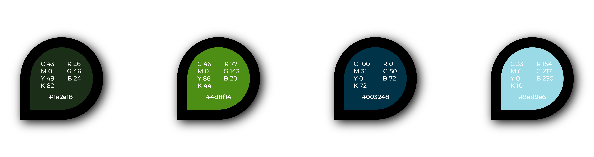

Logotype
I chose "Pom" as my brand name, since I have been using it as my
artisitic pseudonym for many years.
The logotype, which you can see belwo & in the side bar, was
inspired by the letter P and the colours featured are the core brand
colours.
Colours
I will admit, it was kind of hard choosing the colours. First instinct is to start at my favourite colours and go from there but that's not helpful when I have a large palette of colours I love. So, after asking for advice from others, I came to this set of colours:
The neutral colours I have chosen are a classic black and white, seeing as I have colours going on as is. The combination of greens and blues projects a calm and colleted demeanor, which is something I strive for in my career.
Typography
When it came to typography, I limited myself to two fonts with
extensive families.
Montserrat, which will be used for most running text. It's modern
geometric appearance connects to the image of a graphic designer well.
Its cousin font, Montserrat Underline, serves as the logotype, not
straying too far from the cohesive visual identity but still standing
out.